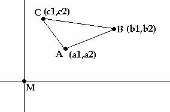
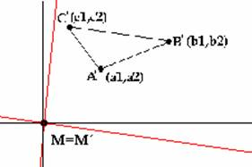
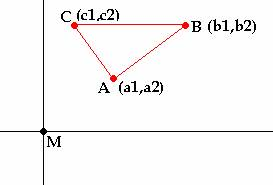

Solución de Alicia y Maite Peña Alcaraz, alumnas de Primero de Bachillerato del colegio Porta Celi de Sevilla (21 de enero de 2003)
Problema:
72.- Alineaciones
| Sea ABC un triángulo en el plano afín euclideo P. Sea M un punto cualquiera del plano. Suponemos que: - la perpendicular por M a la recta AM corta a la recta BC en A' - la perpendicular por M a la recta BM corta a la recta CA en B' - la perpendicular por M a la recta CM corta a la recta AB en C' Demostrar que los puntos A', B' C' están alineados. |
F.G.M. (Frère Gabriel-Marie)(1922): Cours de Géomètrie. Editions Mame.

Si consideramos este triángulo en los ejes cartesianos, e intentamos ver que relaciones cumplen los puntos:
Las rectas AB (c), AC (b) y BC (a) serán:
a= (c2-b2)X -(c1-b1)Y +b2(c1-b1) -b1(c2-b2) =0
b= (c2-a2)X -(c1-a1)Y +a2(c1-a1) -a1(c2-a2) =0
c= (b2-a2)X -(b1-a1)Y +c2(b1-a1) -c1(b2-a2) =0
Las rectas desde M hasta cada punto son fáciles, tendrán de vector director el punto A, B o C, y de punto el (0,0), luego las perpendiculares por m serán las rectas:
A: a1X +a2Y =0
B: b1X +b2Y =0
C: c1X +c2Y =0
Luego los puntos A´, B´ y C´ serán la intersección de las rectas a, b, c con A, B y C, las perpendiculares por M:
C´: X= (c2 ( a1 (b1-a1) – a2 (b2-a2) ) ) / ( c1 (b1-a1) +c2 (b2-a2) )
Y= -(c1 ( a1 (b1-a1) – a2 (b2-a2) ) ) / ( c1 (b1-a1) +c2 (b2-a2) )
B´: X= (b2 ( a1 (c1-a1) – a2 (c2-a2) ) ) / ( b1 (c1-a1) +b2 (c2-a2) )
Y= -(b1 ( a1 (c1-a1) – a2 (c2-a2) ) ) / ( b1 (c1-a1) +b2 (c2-a2) )
A´: X= (a2 ( b1 (c1-b1) – b2 (c2-b2) ) ) / ( a1 (c1-b1) +a2 (c2-b2) )
Y= -(a1 ( b1 (c1-b1) – b2 (c2-b2) ) ) / ( a1 (c1-b1) +a2 (c2-b2) )
Y la condición indispensable para que los tres puntos estén alineados es que
(XB – xA) / (XA-XC) = (YB – YA) / (YA – YC)
Y si se efectúa la división se ve que es cierto siempre que se pueda poner b2=c2, lo cual es evidente que lo podemos hacer, basta con girar la figura del principio los ejes desde el origen para conseguir ésto:
 